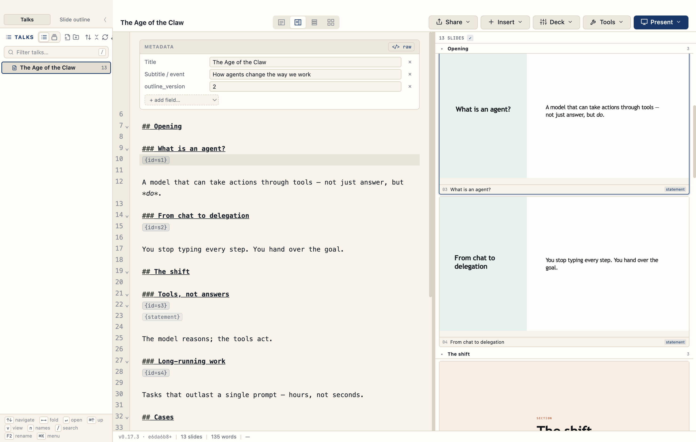

Write your talk as an outline. Present it as polished slides.
Free & open source (MIT) · macOS & Windows · your talks never leave your computer.

Write your talk as a Markdown outline; it compiles to slides as you type. No dragging boxes, no fighting a canvas.
Each talk becomes one HTML file with a real presenter view — notes, a clock, step-through — that runs anywhere, no server or export dance.
A command palette, a shortcut for everything, and a ? cheat-sheet. Your hands never have to leave the keyboard.
Statements, two-column, image grids, carousels, contents pages, diagrams — chosen with a keyboard picker or an inline { } syntax.
Pre-render any slide and tweak its options live with ⌘P — see exactly what the audience will see before you present.
Section colours, type scale, and spacing all follow one design language, so every deck looks considered — not like a template.
Build a shorter or audience-specific version of a talk by ticking slides into a Pathway. The outline itself never changes.
See a pathway as thumbnails, as a numbered running order, or every pathway side by side against the full outline.
Schedule Runs in History, attach the recording when you present, and publish a per-Run handout — each with its own link.
Every click target has a keyboard path, and every shortcut is listed in the in-app cheat-sheet.
macOS (Apple Silicon): open the .dmg and drag TalkWeaver to Applications.
The app isn't notarised yet, so the first launch is blocked — clear the quarantine flag once in Terminal:
xattr -cr /Applications/TalkWeaver.app, then open it normally.
Windows: run TalkWeaver-Setup.exe; at the SmartScreen prompt choose
More info → Run anyway.
Early release: the downloads aren't code-signed or notarised yet, so both systems warn you the first time (that's the step above, not a problem with the app). Windows is best-effort — a few macOS-only features are absent there. If anything misbehaves, please open an issue on GitHub.